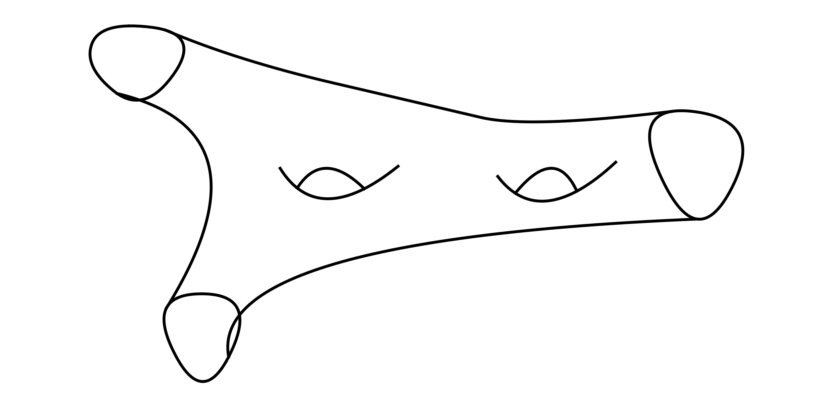
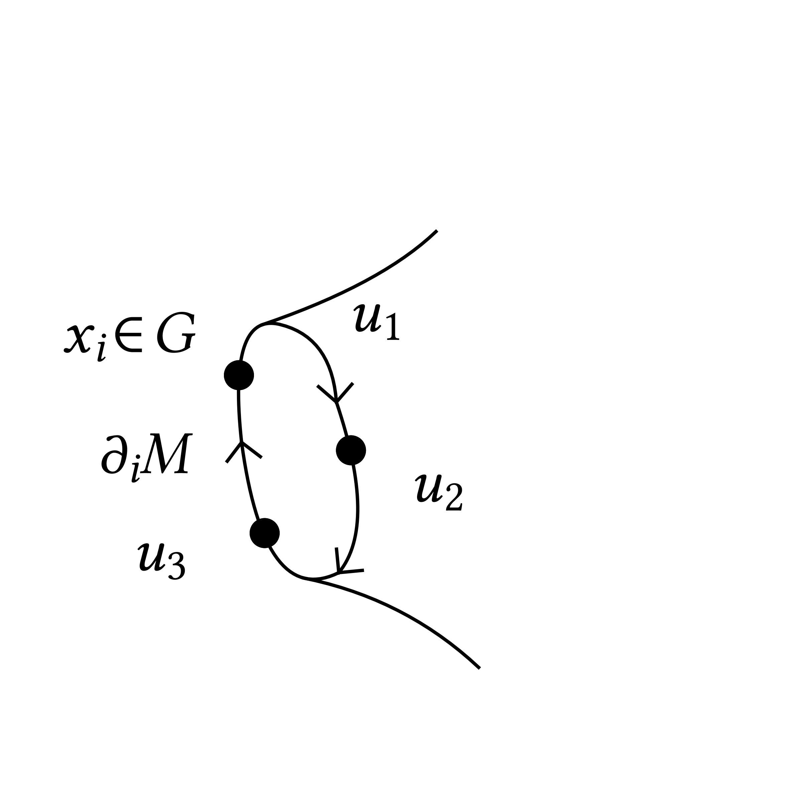
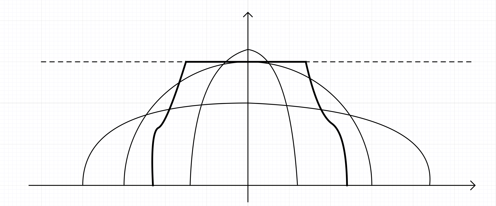

SRQ 20181121 Levy
The partition function of \(2 d\) YM
(Douglas–Kazakov phase transition)
\(M\) compact oriented surface, possibly with boundary, area is available, everything we talk about behaves well under diffeo which preserve the area.
Invariants up to area preserving diffeos are: genus \(g \geqslant 0\), \(\#\) connected components of \(\partial M\), total area \(T > 0\).

\(G\) compact Lie group, \(\langle \cdot, \cdot \rangle\) on \(\mathfrak{g}\) (the Lie algebra of \(G\)). In our case \(G = U (N)\) and
\(\Gamma\) is a graph \((\mathbb{V}, \mathbb{E}, \mathbb{F})\) embedded in \(M\). Every face is homeomorphic to an open disc. This forces to have the boundary covered by edges and the graph is adapted to the topology of the surface. Here \(\mathbb{E}\) contains both oriented edges and let \(\mathbb{E}^+ \subset \mathbb{E}\) the subset which fixes a particular orientation.
Our configuration space is \(u = (u_e)_{e \in \mathbb{E}^+} \in G^{\mathbb{E}^+}\). This is a discrete version of a gauge field which could interact with particles moving on the graph and carring a state belonging to a space where \(G\) acts.
\(\mu^{\Gamma}\) is a measure on \(G^{\mathbb{E}^+}\). Note that \(G^{\mathbb{E}^+}\) has a canonical probability measure given by taking at random elements from \(G\) for every edge but we put boundary condition on edges on \(\partial M\) using a density (involving the heat kernel) which makes the measure \(\mu^{\Gamma}\) the Yang–Mills measure.
Consider edges on the boundary \(\partial M = \cup_i \partial_i M\). The meaningful boundary conditions are well–defined modulo conjugacy classes. Denote \([x]\) the conjugacy class of \(x \in G\). And now we need to impose that \(u_1 u_2 u_3 \in [x_i]\).

Consider
now \(G^3\) acts on this space as
and this action is transitive. We want to endow the set above with a \(G^3\)–invariant measure which we denote as
and we define as follows. Take \(f : G^3 \rightarrow \mathbb{R}\) and let
where \(\mathrm{d} w\) and similar defines the normalized Haar measure on \(G\).
Heat kernel \(K : \mathbb{R}^{\ast}_+ \times G \rightarrow \mathbb{R}^{\ast}_+\): (here \(\Delta_G\) is the Laplace Beltrami operator on \(G\))
Given \(u \in G^{\mathbb{E}^+}\) we define the holonomy \(h_{\partial F} (u)\) of a face \(F \in \mathbb{F}\) \(i \in \{ 1, \ldots, p \}\) and \(h_{\partial_i M} (u)\) the partial holonomy in a connected component of the boundary. They are, as usual, defined up to conjugation.
We define now the lattice \(2 d\) YM measure (Sengupta)
where
\(Z^{\Gamma}_{x_1, \ldots, x_p}\) does not depend on the graph, it depends only on \(G\), the area and \(x_1, \ldots, x_p\). So
How we compute this. Consider a \(g = 2\) surface with \(3\) boundary components and area \(T\), which is homeomorphic to this:
(see Mohar–Bojassen “Curves on surfaces” for the existence of this simple graph). In general we can compute
In the simplest case it gives:
so the heat kernel is one of these functions. Next,
Properties of these functions. (related to surgety of \(2 d\) surfaces)
\(Z_{T, g, p} (x)\) is a symmetric function of \(x_1, \ldots, x_p\) (this corresponds to the fact that diffeos act on the boundary components as the full permutation group)
By gluing two surfaces along a common boundary component we have
which expresses a “Markovian” property of the YM measure.
In particular we can reconstruct all these functions from very few building blocks, namely: a cap
and pants:
Let's go back to
Consider \(G = U (N)\) and \(M = S^2\) with \(\langle X, Y \rangle = N^2 \operatorname{Tr} (X^{\ast}, Y)\).
Theorem. The limit below exists:
and \(F\) is \(C^2\) on \(\mathbb{R}^{\ast}_+\), is \(C^{\infty}\) on \(\mathbb{R}^{\ast}_+ \backslash \{ \pi^2 \}\) and
The results is due to Douglas–Kazakov and the first proof is due to Liechty–Wang (2015) and a subsequent proof is given by Levy–Maïda (2016).
A proof goes via Fourier expansion of the heat kernel: (on any compact Lie group)
\(\hat{G}\) is the set of irreducible representations of \(G\) and \(\Delta \chi_{\alpha} = - c_2 (\alpha) \chi_{\alpha}\). Using this Fourier expression and elementary properties of characters \(\chi_{\alpha}\) of the representation we can also compute that
and
When \(G = U (N)\) we have
Taking \(\ell = (\ell_1 > \cdots > \ell_N)\) we have \(c_2 (\ell) \cong \| \ell \|^2\) and
where \(V\) is the Vandermonde determinant.
So
and
and
so we have a confining potential and electrostatic repulsion. The minimizing configurations are exactly those which give rise to the semicircle distribution. Due to the excluded volume constraint coming from the structure of \(\mathbb{Z}^N_{\downarrow}\) we are looking to minimizers within the class of measures with density \(\leqslant 1\). For small time the absolut minimizer satisfies naturally this constraint. But for \(T = \pi^2\) the constraint is saturated and for \(T > \pi^2\)
